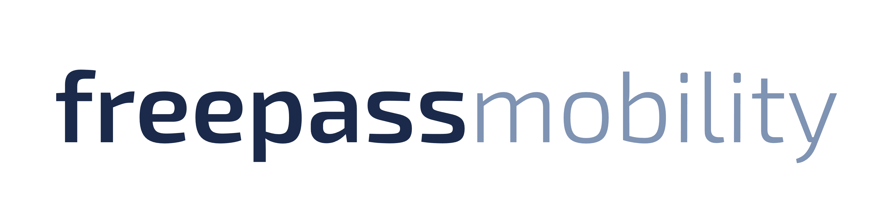

워드마크 · SVG
HOLD견적기 런타임에서 사용 중이지만 글자가 path가 아닌 SVG <text>라 설치 폰트에 따라 결과가 달라질 수 있습니다.
- 340×56 · viewBox 0 0 340 56
- #1B2A4A + #7F93B3
- Exo 2 / Pretendard / Arial 의존
FREEPASS CI CENTER · CANDIDATE RELEASE
로고·색상·아이콘을 한곳에서 비교하고, 승인된 버전만 고정 digest로 소비 저장소에 복사하는 브랜드 공급 경계입니다.
SOURCE COMPARISON
워드마크와 체크 심볼은 각각 실사용 증거가 있지만, 두 계열을 하나의 승인된 CI 패키지로 묶는 원본 근거는 아직 없습니다.
견적기 런타임에서 사용 중이지만 글자가 path가 아닌 SVG <text>라 설치 폰트에 따라 결과가 달라질 수 있습니다.

고해상도 투명 PNG이며 유사한 색과 외형을 갖지만, 생성기·벡터 원본·승인 이력이 확인되지 않았습니다.
ERP4의 PWA·전자서명·문서 UI에서 실제 사용되고 생성·좌표 검증 스크립트도 있습니다. 다만 워드마크와 동일한 승인 패키지라는 연결 근거는 없습니다.
| 영구 Asset ID | 역할 | 상태 | 크기 | SHA-256 | 다운로드 |
|---|---|---|---|---|---|
| Manifest를 불러오는 중입니다. | |||||
MISSING VARIANTS
밝은/어두운 배경, 단색, 소형 favicon을 위한 공식 원본이 확인될 때까지 상태를 명시적으로 비워 둡니다.
TOKENS
현재 토큰은 두 후보에서 반복 확인된 관찰값입니다. 로고를 다시 그리는 근거로 쓰지 말고, 승인 릴리스 전에는 소비 저장소에 동기화하지 마세요.
--freepass-brand-navy: #1b2a4a;
--freepass-brand-steel: #7f93b3;
--freepass-brand-white: #ffffff;USAGE RULES
승인 전 후보에는 “사용 가능”이 아니라 보존·비교 규칙만 적용됩니다.
Manifest의 파일·해시·배경 조건을 함께 확인하고, 승인 후에도 원본 종횡비와 clear space를 유지합니다.
비율 변경, 임의 그라디언트·그림자, 글자 재조판, MEWCAR·웰릭스·파트너 CI와의 합성은 금지합니다.
MEWCAR, 웰릭스, 파트너/화이트라벨, 차량 제조사 자산은 FreePass CI가 아닙니다. 같은 제품 화면에 등장해도 소유권과 manifest를 분리합니다.
DISTRIBUTION CONTRACT
실행 중 원격 URL을 참조하면 자산이 조용히 바뀔 수 있습니다. 소비처는 버전과 manifest digest를 고정한 뒤 로컬 파일로 복사하고 receipt를 남겨야 합니다.
Manifest version과 SHA-256을 함께 기록합니다.
Release와 asset이 모두 APPROVED인지 확인합니다.
소비 저장소의 brand 디렉터리로 복사합니다. 원격 hotlink는 금지합니다.
source path, version, manifest digest, asset digest, 목적지를 커밋합니다.
node scripts/sync-ci-assets.mjs --source ./ci --target ../consumer/public/brand --version 0.1.0-hold.1 --digest <manifest-sha256> --receipt ../consumer/brand-receipt.jsonDOWNLOADS
모든 파일은 현재 후보 증거입니다. 승인 자산 묶음이 아닙니다.
{kind=link}
{kind=link}
{kind=link}